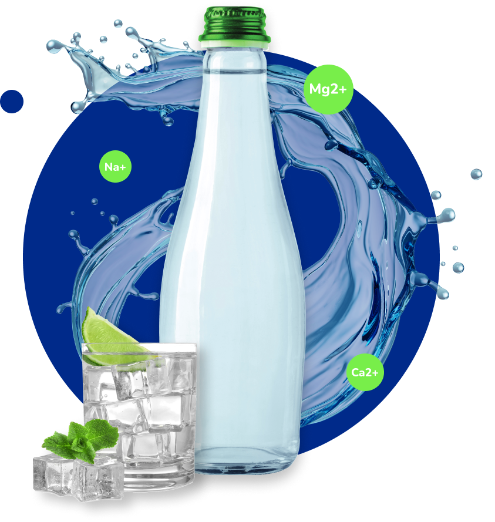

<section class="water-section">
    <div class="water-info">
        
        <h1 class="section-title">
            - WHAT'S INSIDE -
        </h1>
        <h2 class="subsection-title">
            Mineral Composition
        </h2>
        <p class="composition-text">
            With the perfectly balanced mix of minerals, spring water is so far the healthiest drink choice, whether you
            drink it.
        </p>
        <h3 class="mineral-title">
            Calcium Ca2+ 240 mg/L
        </h3>
        <p class="mineral-text">
            About 99% of the calcium in our bodies is in our bones and teeth.
        </p>
        <h3 class="mineral-title">
            Sodium Na+ 5.2 mg/L
        </h3>
        <p class="mineral-text">
            It’s an important component for proper muscle and nerve function.
        </p>
        <h3 class="mineral-title">
            Magnesium Mg2+ 42 mg/L
        </h3>
        <p class="mineral-text">
            Magnesium is a nutrient that the body needs to stay healthy.
        </p>
        <h3 class="mineral-title">
            Sulfate SO4(2-) 384 mg/L
        </h3>
        <p class="mineral-text">
            This is an antacid used to relieve heartburn and acid indigestion.
        </p>
    </div>
</section>